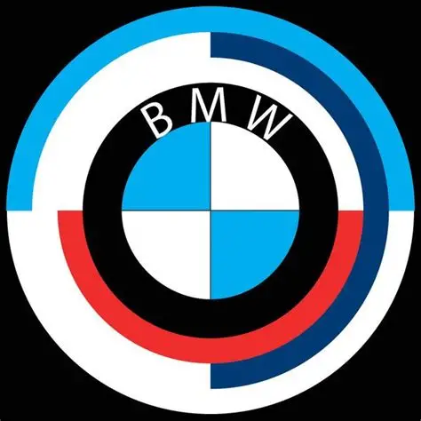
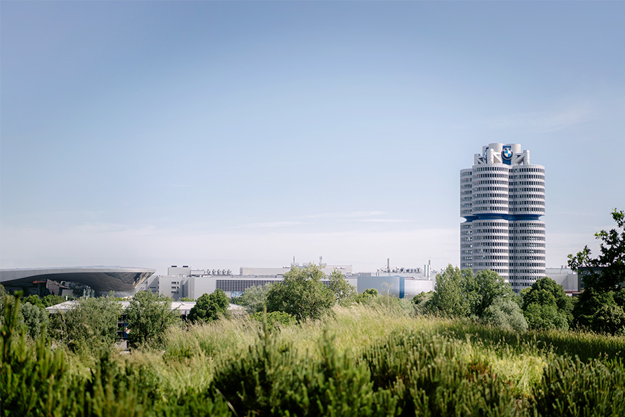
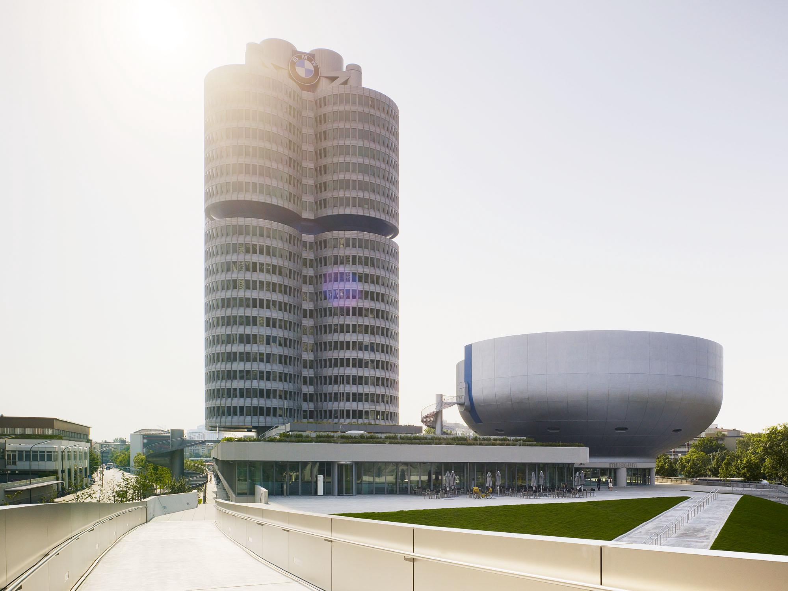
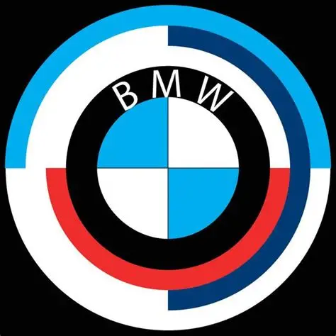
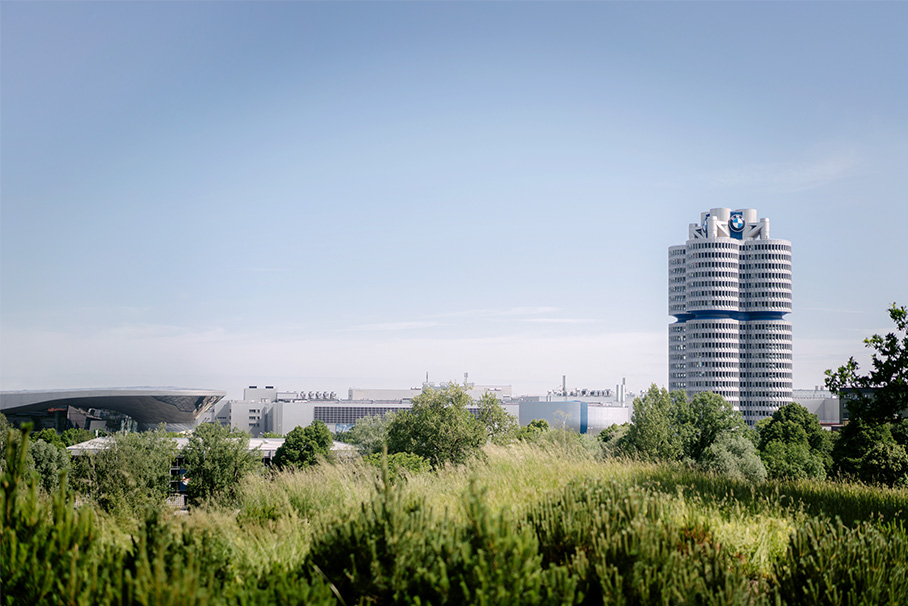
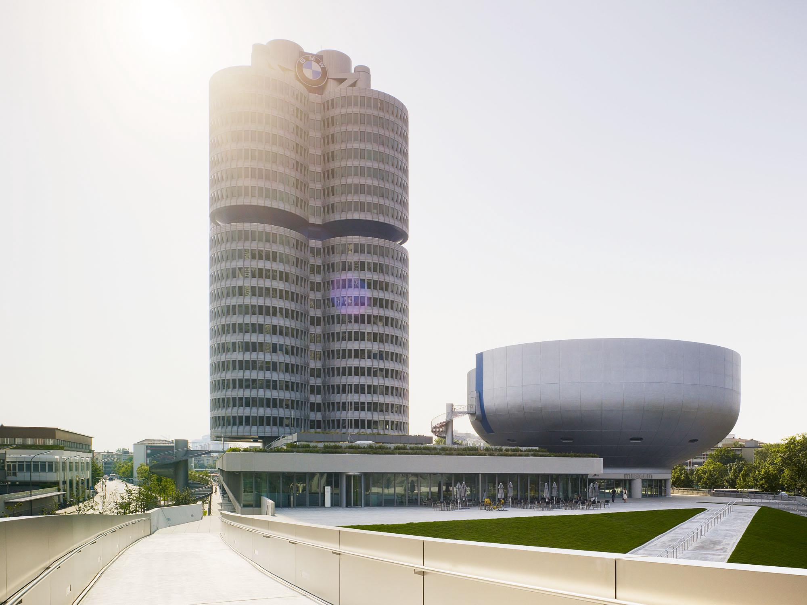

What is BMW
BMW, short for Bayerische Motoren Werke, has earned a global reputation for engineering precision and driving enjoyment. The company’s roots trace back to aircraft engines, and that commitment to aerodynamic efficiency still influences its automotive designs today.
In its early years, BMW focused on motorcycles before launching its first automobile in 1928. The brand’s attention to craftsmanship and mechanical detail quickly distinguished it from competitors, laying a foundation for its luxury legacy.
Throughout the 1930s and 1940s, BMW made significant strides in performance engineering, particularly with models like the BMW 328. These vehicles dominated motorsports events, proving BMW’s credibility on the racetrack.
The aftermath of World War II presented challenges, but BMW rebuilt its identity through innovation. The release of the BMW 507 roadster in 1956 marked a return to stylish performance, with sleek curves and forward-thinking technology.
In the 1960s, the "Neue Klasse" series introduced a new era of family-friendly yet sporty sedans, which positioned BMW as the bridge between practicality and excitement. These cars helped modernize its image and led directly to the 3 Series revolution.
Launched in 1975, the BMW 3 Series became the brand’s most iconic model line. It continues to be the benchmark for compact executive cars, known for its razor-sharp handling and balanced performance.
BMW’s passion for motorsport gave birth to the legendary M division. Vehicles like the M3 and M5 brought race-inspired technology to everyday streets, making high-performance driving accessible to enthusiasts worldwide.
In the 1980s and 1990s, BMW expanded into luxury grand tourers like the 8 Series, as well as SUVs such as the X5—proving that the brand could offer speed, style, and utility without compromise.
The launch of the i3 and i8 introduced BMW to electric mobility with futuristic design and eco-conscious engineering. These models proved that sustainability could coexist with driving pleasure.
As technology evolved, BMW integrated features like adaptive cruise control, gesture-based infotainment, and AI-assisted parking—enhancing both safety and driver convenience.
Today, BMW’s lineup ranges from the agile 1 Series to luxury flagships like the 7 Series and i7. Every model is shaped by a legacy of precision, innovation, and a desire to create emotional connections with drivers.
The company’s manufacturing philosophy embraces both craftsmanship and sustainability. BMW uses recycled materials, energy-efficient factories, and advanced logistics to reduce its ecological footprint.
Through partnerships with artists, designers, and engineers, BMW embraces culture while pushing boundaries in mobility. Its Art Car project, featuring works by Warhol, Hockney, and Cao Fei, merges speed with creativity.
BMW’s global influence continues to grow, with facilities across Germany, the U.S., South Africa, and China. These plants produce vehicles that meet local demands while maintaining brand consistency.
Looking ahead, BMW is investing heavily in autonomous driving, hydrogen power, and AI-enhanced driving experiences. The upcoming Neue Klasse platform promises to redefine electric vehicle architecture for the next generation.
Evolution Timeline and some image
 





- 1928: BMW enters automobile production with the BMW 3/15, rebadged from Austin Seven.
- 1936: Launch of the BMW 328, a motorsport icon known for its lightweight performance.
- 1955: The BMW Isetta microcar helps the brand recover post-WWII.
- 1962–1972: Neue Klasse sedans and the first 5 Series redefine BMW's sporty luxury image.
- 1975–1978: Debut of the 3 Series and the M Division; birth of the M1 supercar.
- 1986–1989: Introduction of the V12 engine and the 8 Series grand tourer.
- 1999–2013: Expansion into SUVs and electric models with the X5, i3, and i8.
- 2020–2025: EV lineup grows with the i4, iX, i7, and upcoming Neue Klasse platform.
Thanks for visiting my page
CREATED BY ERMIAS ALEMAYEHU